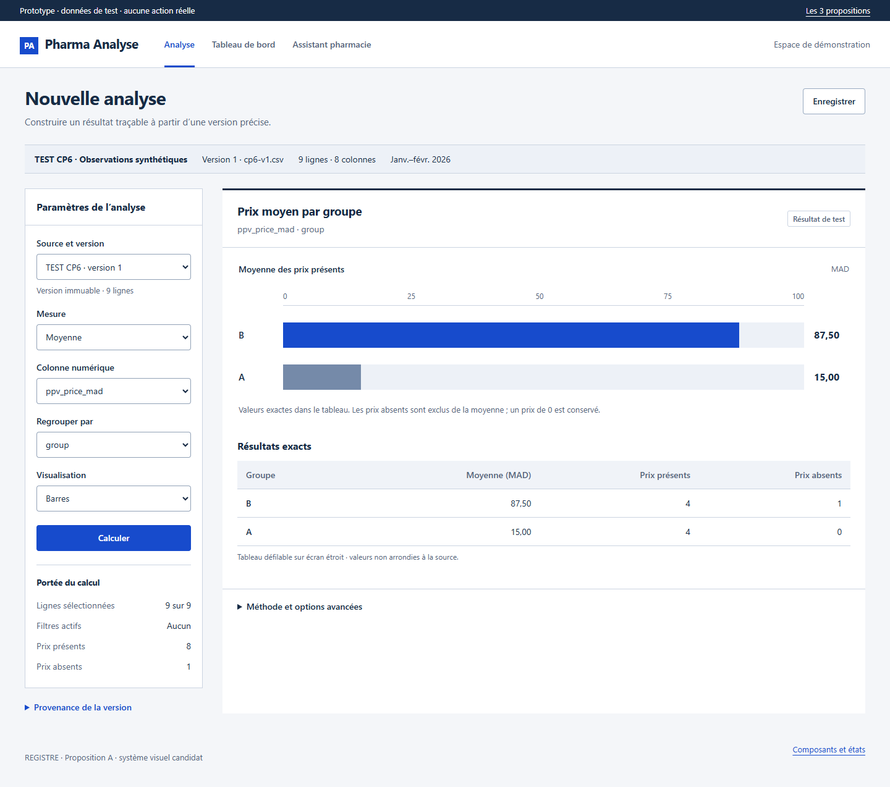

The analytical register
Horizontal navigation. Parameters beside results. Flat, ruled surfaces; cobalt actions and precise tables.



Strongest simultaneous parameter/result visibility. Narrow screens need deliberate table scrolling. Assistant facts come first on mobile.